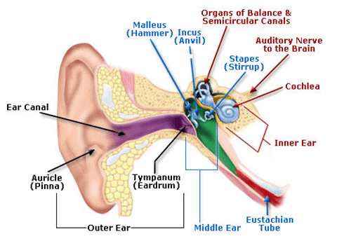
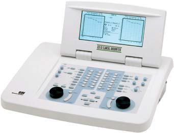

PSYC209 Lab Class
1. Introduction
Welcome to the PSYC209 Hearing Screening Lab! In this lab you will learn about hearing screening tests — how they work, how we decide whether someone "passes" or is "referred" for further testing, and what makes a screening test good or bad.
You'll work through interactive demos, and then take a real hearing screening test yourself. We'll analyse your results together and see where your hearing sits relative to a population of listeners.
Work through each section at your own pace. New sections will appear as you complete each one.
2. Different Types of Hearing Loss
In the lecture on "Sound, the ear, and hearing", you learnt about:
- the outer ear and ear canal — which guide sound to the ear drum
- the middle ear — which matches the acoustic impedance of the air-filled world to the fluid-filled inner ear so sound can pass easily into it; and
- the cochlea of the inner ear — which converts the sound-induced vibration into neural signals to travel up to the brain.

If sound has difficulty getting through the outer or middle ears, we call that a conductive hearing impairment. This means less sound reaches the inner ear (making it harder to hear), but fixing the issue medically or simply turning up the sound can usually overcome this and give normal speech perception.
If there is something wrong with the hair cells or nerves of the inner ear, we call that a sensorineural hearing impairment. This type of hearing loss is usually permanent, and in contrast to conductive losses, not only is sound harder to detect, but we also lose sound clarity, even if we turn it up. A major complaint of people with sensorineural hearing loss is that it's harder to understand speech in noise.
3. How Do We Test Hearing?
The standard means of diagnosing hearing impairment is through pure-tone audiometry. This involves a highly-trained Audiologist using an expensive device called an audiometer to deliver carefully calibrated pure-tones in each ear, establishing our psychophysical detection thresholds at different frequencies.
Despite this type of testing being the "gold standard" for diagnosing hearing impairment, there can sometimes be a barrier to people accessing this kind of service, whether it is geographic, socioeconomic, or systemic (collectively known as social determinants of health). As a result, it can often be many years before someone who thinks they might have a hearing impairment actually seeks help for it.

So what if there was an alternative? A hearing screening method that people can do at home or in any quiet space, using inexpensive or ubiquitous equipment, uncalibrated transducers, and untrained users?
4. Screening Tests vs Diagnostic Tests
Just before we go further, it's worth pointing out the difference between a screening test and a diagnostic test:
A good analogy: a screening test is like airport security — it's fast and catches most threats, but sometimes it flags harmless items (false alarms) and occasionally misses something (misses). Diagnostic testing is like the detailed bag search that follows.
5. Introducing the Digit Triplet Test
Remember we said people with sensorineural hearing impairment have difficulty hearing speech in noise? It turns out we can actually use this speech-in-noise ability to detect hearing loss!
The digit triplet test (DTT) (Smits et al., 2004) is a speech-in-noise hearing screening test. You hear three spoken digits (e.g., "3-9-1") embedded in background noise, and you try to identify them. The noise level stays the same but the speech level changes — getting quieter when you're doing well, and louder when you're struggling.
The test adapts to find the speech reception threshold (SRT): the signal-to-noise ratio (SNR) at which you can just barely identify the digits correctly. A lower (more negative) SRT means you can hear the speech at a quieter level relative to the noise — which indicates better hearing.
Versions of these tests have been created in many languages worldwide. Click a flag to hear an example:
6. The Aotearoa New Zealand Hearing Screening Test
The Aotearoa New Zealand Hearing Screening Test (NZHST) is a digit triplet test developed here at the University of Canterbury. It is available in both English (produced in 2010) and te reo Māori (produced in 2011), the first digit triplet test produced in a non-European indigenous language.
You will take this test yourself shortly. But first, let's explore some of the concepts behind how the test works and how we evaluate its accuracy.
7. The Digit Sounds
The test uses recordings of digits 0–9 spoken by a native speaker. Each trial presents three digits in sequence, embedded in noise.
Click each waveform to hear it.
(constant level)
(variable level)
(in this case, 0 dB SNR)
8. The Background Noise
The background noise used in the test isn't just random static — it's carefully shaped to have the same long-term frequency spectrum as the speech it masks. This is called speech-weighted noise.
Watch this short demo to see how the noise is built up by superimposing thousands of copies of the speech recordings at random positions:
The figure below shows how the long-term spectrum of the speech signal and the spectrum of the generated noise are nearly identical.

9. The Antiphasic Advantage
If you've been wearing headphones (note: you'll definitely need them from this point onwards), you might have noticed all the recordings you've heard so far sound like they're in the middle of your head. This is because the waveforms in each ear are in phase - they have the same polarity.
But something interesting happens when we flip the phase of the signal (but not the noise) in one ear. Click the switch button below several times and watch what happens to image of the signal waveform on the right.
In this example, the signal-to-noise ratio is now down to -9 dB SNR (that is, the signal is 9 dB lower than the noise), which makes it harder to hear. Set the signal to diotic, then click the image to play the sound. Now switch to antiphasic and play that one.
People report the diotic signal as sounding like it's coming from the centre of their head, but that the antiphasic one is coming from both sides simultaneously. That's because phase information is important for directional hearing, as we covered in the Auditory Localization and Scene Perception lecture.
You might also notice that the antiphasic one is much easier to hear, despite the SNR not changing. Interestingly, this effect is much larger when both your ears have normal hearing, and people with a conductive hearing loss, or hearing better in one ear than the other, don't get this same antiphasic advantage.
This means we can incorporate antiphasic stimuli into digit triplet tests, and make them sensitive to conductive and unilateral hearing losses, not just sensorineural ones (De Sousa et al. 2020). Over the last couple of years we've added antiphasic stimuli to the Aotearoa New Zealand Hearing Screening Test, and that's the version you're going to try shortly.
But how can we tell if our test is working or not?
10. Determining test performance
To tell if a screening test is accurate, we need to compare against a gold standard. For this test, the comparison is with pure-tone audiometry — specifically, the four-frequency average (4FA) of hearing thresholds at 500 Hz, 1 kHz, 2 kHz, and 4 kHz.
Click each frequency below to hear a tone at that frequency:
We conducted this research in both New Zealand English and te reo Māori. Choose which dataset you'd like to explore:
Here is the data showing the test SRTs scored by 161 people with different hearing levels. Each dot represents one person — their pure-tone average (gold standard) on the x-axis and their screening test SRT on the y-axis:
11. Pass, Refer, and the Confusion Matrix
A screening test has two possible outcomes: "pass" (you probably don't have the condition) and "refer" (you should get diagnostic testing to check). To evaluate the test, we compare these outcomes against the gold standard using two cut-offs:
- A hearing-level cut-off — above this, the gold standard says the person has a hearing loss
- A test SRT cut-off — above (less negative than) this, the screening test says "refer"
This creates four quadrants. In practice, the hearing-level cut-off is fixed by clinical convention (usually 25 dB HL), but we're free to choose where to set the test's SRT cut-off. Try adjusting the SRT slider to see how the data points change classification:
12. Exploring Sensitivity
Sensitivity is the proportion of people with the condition that the test correctly identifies. Drag the slider from left to right to trace the sensitivity curve. The curve plots sensitivity at each possible test cut-off:
13. Exploring Specificity
Now do the same for specificity — the proportion of people without the condition that the test correctly passes:
14. Finding the Optimal Balance
Now let's see both sensitivity and specificity together. Your challenge: find the test cut-off that gives the best balance between sensitivity and specificity. Move the slider and watch both values — try to find the sweet spot where both are as high as possible.
When you're happy with your choice, lock it in:
15. The ROC Curve
The same data can also be plotted as a Receiver Operating Characteristic (ROC) curve. This plots sensitivity (y-axis) against 1 − specificity (x-axis) for every possible cut-off. A perfect test would have a curve that goes straight up to the top-left corner.
The area under the curve (AUC) summarises the test's overall discriminating ability. An AUC of 1.0 is perfect; 0.5 is no better than chance.
Try dragging the cut-off slider — the marker moves along the ROC curve. When you let go, it springs back to the Youden-optimal point:
16. The Main Event — Take the Test!
It's time to take the Aotearoa New Zealand Hearing Screening Test yourself!
Instructions
When you open the test, you'll be asked to enter an ID. Please enter the course code followed by a space and your UC email address, like this:
(Replace abc123 with your own usercode.)
This will trigger the test to email your results to you, including a .csv file with all the trial-by-trial data.
You can do the test in English or te reo Māori — the choice is yours. This test must be performed with headphones due to the antiphasic nature of the stimuli.
Once you've completed the test and received your results email, come back here and upload your .csv file below.
17. Wrap-Up
What you've learned
In this lab, you've covered a lot of ground. Here's a summary of the key concepts:
- The difference between conductive and sensorineural hearing impairment, and why sensorineural losses make speech in noise particularly difficult.
- How pure-tone audiometry works as the gold standard for diagnosing hearing loss, and the barriers that can prevent people from accessing it.
- The difference between a screening test and a diagnostic test — one flags potential issues quickly, the other confirms them definitively.
- How the digit triplet test (DTT) uses speech-in-noise perception to screen for hearing loss, and how the adaptive procedure finds your speech reception threshold (SRT).
- How speech-weighted noise is generated by matching the long-term spectrum of the speech signal.
- The antiphasic advantage — how inverting the signal polarity in one ear dramatically improves intelligibility if you have normal hearing, and how this is exploited in the antiphasic digit triplet tests.
- How we evaluate a screening test using Signal Detection Theory: true positives, true negatives, false positives, and false negatives.
- How sensitivity (catching people who have the condition) and specificity (correctly passing people who don't) trade off against each other as we move the test cut-off.
- The Youden index (J) as a way to find the optimal balance between sensitivity and specificity.
- How to read an ROC curve and what the area under the curve (AUC) tells us about overall test quality.
- How your own hearing test result is calculated from the adaptive track, and what it means relative to the population data.
Looking after your hearing
Your hearing connects you to the people and experiences that matter — conversations with friends, your favourite music, the sounds of the world around you. Looking after your hearing now means you get to keep enjoying all of that for decades to come. Simple steps like turning down your headphones, using ear protection at concerts or around loud equipment, and giving your ears a break in quiet spaces can make a real difference.
For practical advice on protecting your hearing, visit the New Zealand Audiological Society:
That's the end of the lab. If you have any questions, ask your demonstrator or post on the PSYC209 forum.